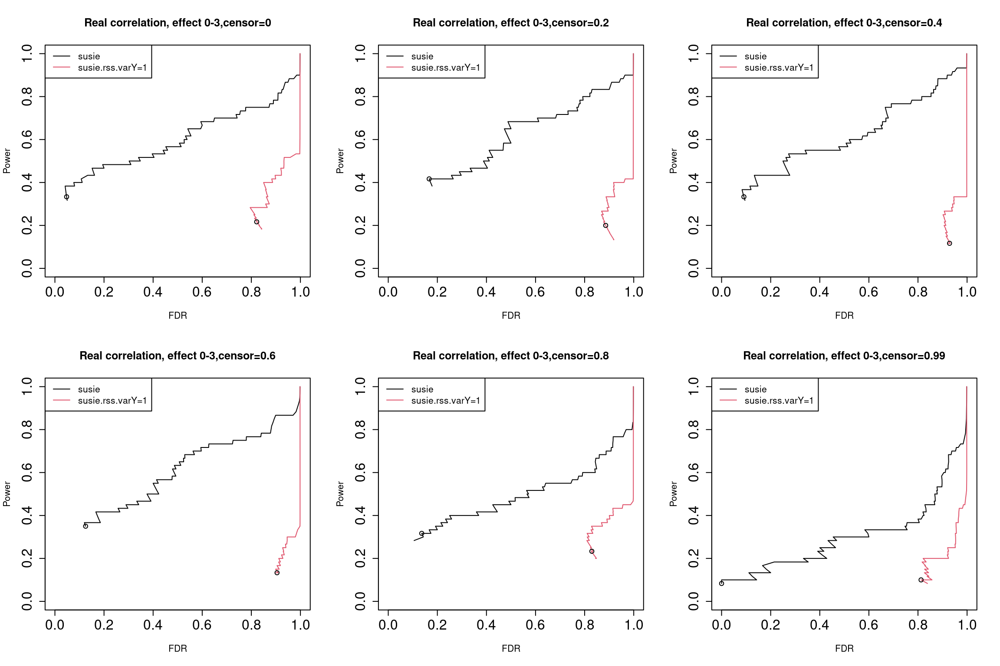
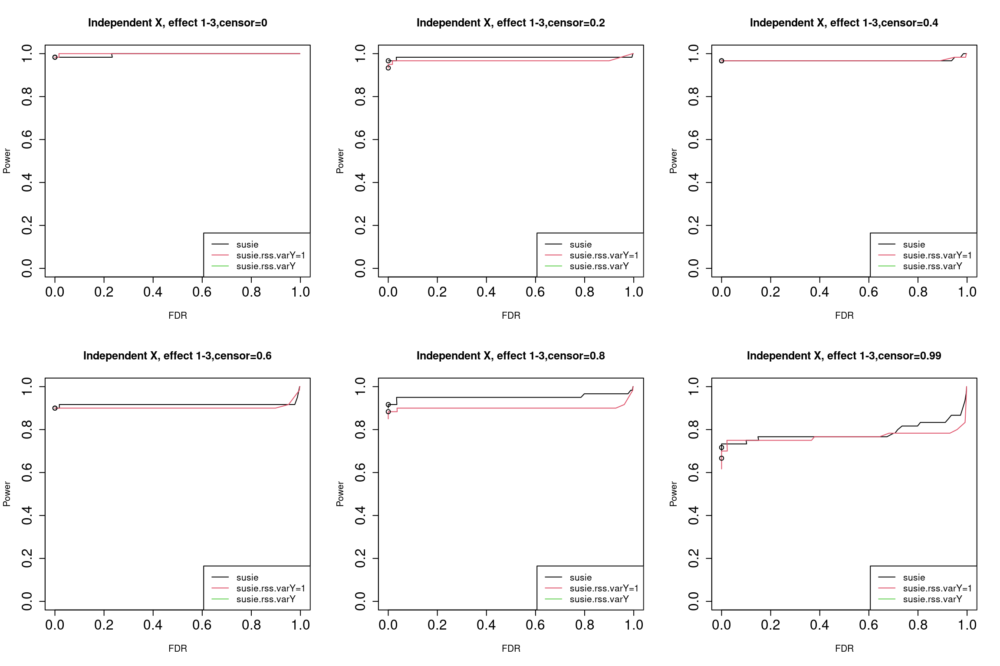

Survival susie vs. survival susie rss
Yunqi Yang
05/08/2023
Last updated: 2024-01-30
Checks: 7 0
Knit directory: survival-susie/
This reproducible R Markdown analysis was created with workflowr (version 1.7.0). The Checks tab describes the reproducibility checks that were applied when the results were created. The Past versions tab lists the development history.
Great! Since the R Markdown file has been committed to the Git repository, you know the exact version of the code that produced these results.
Great job! The global environment was empty. Objects defined in the global environment can affect the analysis in your R Markdown file in unknown ways. For reproduciblity it’s best to always run the code in an empty environment.
The command set.seed(20230201) was run prior to running
the code in the R Markdown file. Setting a seed ensures that any results
that rely on randomness, e.g. subsampling or permutations, are
reproducible.
Great job! Recording the operating system, R version, and package versions is critical for reproducibility.
Nice! There were no cached chunks for this analysis, so you can be confident that you successfully produced the results during this run.
Great job! Using relative paths to the files within your workflowr project makes it easier to run your code on other machines.
Great! You are using Git for version control. Tracking code development and connecting the code version to the results is critical for reproducibility.
The results in this page were generated with repository version 10d9db1. See the Past versions tab to see a history of the changes made to the R Markdown and HTML files.
Note that you need to be careful to ensure that all relevant files for
the analysis have been committed to Git prior to generating the results
(you can use wflow_publish or
wflow_git_commit). workflowr only checks the R Markdown
file, but you know if there are other scripts or data files that it
depends on. Below is the status of the Git repository when the results
were generated:
Ignored files:
Ignored: .Rproj.user/
Untracked files:
Untracked: analysis/dat_analysis_cancer_subtype.Rmd
Unstaged changes:
Modified: analysis/compare_method_large_sample.Rmd
Note that any generated files, e.g. HTML, png, CSS, etc., are not included in this status report because it is ok for generated content to have uncommitted changes.
These are the previous versions of the repository in which changes were
made to the R Markdown (analysis/susierss_large_sample.Rmd)
and HTML (docs/susierss_large_sample.html) files. If you’ve
configured a remote Git repository (see ?wflow_git_remote),
click on the hyperlinks in the table below to view the files as they
were in that past version.
| File | Version | Author | Date | Message |
|---|---|---|---|---|
| Rmd | 10d9db1 | yunqi yang | 2024-01-30 | wflow_publish("analysis/susierss_large_sample.Rmd") |
| html | d334677 | yunqi yang | 2024-01-30 | Build site. |
| html | aeaa8ea | yunqi yang | 2024-01-30 | Build site. |
| html | 4b2dd5a | yunqi yang | 2024-01-29 | Build site. |
| Rmd | 10df5e5 | yunqi yang | 2024-01-29 | wflow_publish("analysis/susierss_large_sample.Rmd") |
| html | e6f9c76 | yunqi yang | 2024-01-29 | Build site. |
| Rmd | deb4505 | yunqi yang | 2024-01-29 | wflow_publish("analysis/susierss_large_sample.Rmd") |
Description:
Compare results for susie and susierss on real genotype data from UKBiobank with \(n=50000\) and \(p=1000\). SuSIE and SuSIE-RSS run for 10 iterations.
Would be interesting to compare with SuSiE(10 iterations) and SUSIE-RSS (100 or 500 iterations).
calculate_tpr_vs_fdr <- function(pip, is_effect, ts){
res <- matrix(NA, nrow = length(ts), ncol = 2)
colnames(res) = c("tpr", "fdr")
for (i in 1:length(ts)){
pred_pos = pip >= ts[i]
tp = pip >= ts[i] & is_effect == 1
fp = pip >= ts[i] & is_effect == 0
tpr = sum(tp)/sum(is_effect)
fdr = sum(fp)/sum(pred_pos)
res[i, ] = c(tpr, fdr)
}
return(res)
}
# coverage: the proportion of CSs that contain an effect variable
# @param dat_indx: the indx for the data from dsc
# @param res.cs: credible sets from dsc
calculate_cs_coverage = function(res.cs, res.is_effect, dat_indx){
contain_status = c()
for (indx in dat_indx){
cs = res.cs[[indx]]$cs
true_effect = which(res.is_effect[[indx]] >= 1)
if (!is.null(cs)){
for (j in 1:length(cs)){
res = ifelse(sum(true_effect %in% unlist(cs[j])) == 1, 1, 0)
contain_status = c(contain_status, res)
}
}
}
coverage = sum(contain_status)/length(contain_status)
return(coverage)
}
# @param res.cs: credible sets from dsc
# @param dat_indx: the indx for the data from dsc
# @p: number of variables in each simulation replicate.
get_cs_effect = function(res.cs, dat_indx, p){
cs_effect = c()
for (indx in dat_indx){
effect = rep(0, p)
cs_effect_indx = c(unlist(res.cs[[indx]]$cs))
effect[cs_effect_indx] = 1
cs_effect = c(cs_effect, effect)
}
return(cs_effect)
}susie = readRDS("/project2/mstephens/yunqiyang/surv-susie/dsc202401/susie.rds")
rss = readRDS("/project2/mstephens/yunqiyang/surv-susie/dsc202401/susie.rss.rds")
rss.varY = readRDS("/project2/mstephens/yunqiyang/surv-susie/dsc202401/susie.rss.varY.rds")1. Results using real correlation structure from data
par(mfrow = c(2,3), cex.axis = 1.5)
censor_lvl = c(0, 0.2, 0.4, 0.6, 0.8, 0.99)
for (i in 1:length(censor_lvl)){
indx = which(susie$simulate.cor_type == "real" & susie$simulate.censor_lvl == censor_lvl[i])
pip.susie = unlist(lapply(indx, function(x) susie$susie.pip[[x]]))
pip.rss = unlist(lapply(indx, function(x) rss$susie_rss.pip[[x]]))
pip.rss.varY = unlist(lapply(indx, function(x) rss.varY$susie_rss_varY.pip[[x]]))
is_effect = unlist(lapply(indx, function(x) susie$simulate.is_effect[[x]]))
ts = seq(from = 0, to = 0.99, by = 0.001)
res.susie = calculate_tpr_vs_fdr(pip.susie, is_effect, ts)
res.rss = calculate_tpr_vs_fdr(pip.rss, is_effect, ts)
res.rss.varY = calculate_tpr_vs_fdr(pip.rss.varY, is_effect, ts)
plot(res.susie[,2], res.susie[,1], type = "l", xlim = c(0,1), ylim = c(0, 1), xlab = "FDR", ylab = "Power",
main = paste0("Real correlation, effect 0-3", ",censor=", censor_lvl[i]))
lines(res.rss[,2], res.rss[,1], type = "l", col = 2)
lines(res.rss.varY[,2], res.rss.varY[,1], type = "l", col = 3)
points(res.susie[96,2], res.susie[96, 1])
points(res.rss[96,2], res.rss[96, 1])
points(res.rss.varY[96,2], res.rss.varY[96, 1])
legend("topleft", legend = c("susie", "susie.rss.varY=1", "susie.rss.varY"), col = c(1,2,3), lty = 1)
}
| Version | Author | Date |
|---|---|---|
| e6f9c76 | yunqi yang | 2024-01-29 |
The dots indicate PIP threshold = 0.95
2. Results using independent X, without data from null model.
par(mfrow = c(2,3),cex.axis = 1.5)
censor_lvl = c(0, 0.2, 0.4, 0.6, 0.8, 0.99)
for (i in 1:length(censor_lvl)){
indx = which(susie$simulate.cor_type == "independent" & susie$simulate.censor_lvl == censor_lvl[i] & susie$simulate.num_effect != 0)
pip.susie = unlist(lapply(indx, function(x) susie$susie.pip[[x]]))
pip.rss = unlist(lapply(indx, function(x) rss$susie_rss.pip[[x]]))
pip.rss.varY = unlist(lapply(indx, function(x) rss.varY$susie_rss_varY.pip[[x]]))
is_effect = unlist(lapply(indx, function(x) susie$simulate.is_effect[[x]]))
ts = seq(from = 0, to = 0.99, by = 0.01)
res.susie = calculate_tpr_vs_fdr(pip.susie, is_effect, ts)
res.rss = calculate_tpr_vs_fdr(pip.rss, is_effect, ts)
res.rss.varY = calculate_tpr_vs_fdr(pip.rss.varY, is_effect, ts)
plot(res.susie[,2], res.susie[,1], type = "l", xlim = c(0,1), ylim = c(0, 1), xlab = "FDR", ylab = "Power",
main = paste0("Independent X, effect 0-3", ",censor=", censor_lvl[i]))
lines(res.rss[,2], res.rss[,1], type = "l", col = 2)
lines(res.rss.varY[,2], res.rss.varY[,1], type = "l", col = 3)
points(res.susie[96,2], res.susie[96, 1])
points(res.rss[96,2], res.rss[96, 1])
points(res.rss.varY[96,2], res.rss.varY[96, 1])
legend("topleft", legend = c("susie", "susie.rss.varY=1", "susie.rss.varY"), col = c(1,2,3), lty = 1)
}
| Version | Author | Date |
|---|---|---|
| e6f9c76 | yunqi yang | 2024-01-29 |
The dots indicate PIP threshold = 0.95.
3. Results using independent X, with data from null model.
par(mfrow = c(2,3),cex.axis = 1.5)
censor_lvl = c(0, 0.2, 0.4, 0.6, 0.8, 0.99)
for (i in 1:length(censor_lvl)){
indx = which(susie$simulate.cor_type == "independent" & susie$simulate.censor_lvl == censor_lvl[i])
pip.susie = unlist(lapply(indx, function(x) susie$susie.pip[[x]]))
pip.rss = unlist(lapply(indx, function(x) rss$susie_rss.pip[[x]]))
pip.rss.varY = unlist(lapply(indx, function(x) rss.varY$susie_rss_varY.pip[[x]]))
is_effect = unlist(lapply(indx, function(x) susie$simulate.is_effect[[x]]))
ts = seq(from = 0, to = 0.99, by = 0.01)
res.susie = calculate_tpr_vs_fdr(pip.susie, is_effect, ts)
res.rss = calculate_tpr_vs_fdr(pip.rss, is_effect, ts)
res.rss.varY = calculate_tpr_vs_fdr(pip.rss.varY, is_effect, ts)
plot(res.susie[,2], res.susie[,1], type = "l", xlim = c(0,1), ylim = c(0, 1), xlab = "FDR", ylab = "Power",
main = paste0("Real correlation, effect 0-3", ",censor=", censor_lvl[i]))
lines(res.rss[,2], res.rss[,1], type = "l", col = 2)
lines(res.rss.varY[,2], res.rss.varY[,1], type = "l", col = 3)
points(res.susie[96,2], res.susie[96, 1])
points(res.rss[96,2], res.rss[96, 1])
points(res.rss.varY[96,2], res.rss.varY[96, 1])
legend("topleft", legend = c("susie", "susie.rss.varY=1", "susie.rss.varY"), col = c(1,2,3), lty = 1)
}
| Version | Author | Date |
|---|---|---|
| e6f9c76 | yunqi yang | 2024-01-29 |
The dots indicate PIP threshold = 0.95.
5. Assess Susie CS
coverage = matrix(NA, ncol = 3, nrow = length(censor_lvl))
censoring = c(0, 0.2, 0.4, 0.6, 0.8, 0.99)
colnames(coverage) = c("effect:1", "effect:2", "effect:3")
rownames(coverage) = c("censor:0", "censor:0.2", "censor:0.4", "censor:0.6", "censor:0.8", "censor:0.99")
for (i in 1:3){
for (j in 1:6){
dat_indx = which(susie$simulate.num_effect == i & susie$simulate.censor_lvl == censoring[j])
coverage[j, i] = calculate_cs_coverage(susie$susie.cs, susie$simulate.is_effect, dat_indx)
}
}
coverage
# effect:1 effect:2 effect:3
# censor:0 1.0000000 0.8372093 0.9365079
# censor:0.2 1.0000000 0.9090909 0.8591549
# censor:0.4 1.0000000 0.9761905 0.8923077
# censor:0.6 0.9473684 0.9375000 0.8939394
# censor:0.8 1.0000000 0.9142857 0.8428571
# censor:0.99 1.0000000 1.0000000 0.9230769power_cs = matrix(NA, ncol = 3, nrow = 6)
censoring = c(0, 0.2, 0.4, 0.6, 0.8, 0.99)
colnames(power_cs) = c("effect:1", "effect:2", "effect:3")
rownames(coverage) = c("censor:0", "censor:0.2", "censor:0.4", "censor:0.6", "censor:0.8", "censor:0.99")
for (i in 1:3){
for (j in 1:6){
dat_indx = which(susie$simulate.num_effect == i & susie$simulate.censor_lvl == censoring[j])
cs_effect = get_cs_effect(susie$susie.cs, dat_indx, p = 1000)
is_effect = unlist(lapply(dat_indx, function(x) susie$simulate.is_effect[[x]]))
power = sum(cs_effect ==1 & is_effect == 1)/sum(is_effect)
power_cs[j, i] = power
}
}
power_cs
# effect:1 effect:2 effect:3
# [1,] 0.85 0.900 0.9000000
# [2,] 1.00 0.900 0.9000000
# [3,] 1.00 0.950 0.9000000
# [4,] 0.90 0.775 0.9333333
# [5,] 1.00 0.775 0.8666667
# [6,] 0.70 0.775 0.6000000coverage = matrix(NA, ncol = 2, nrow = 6)
censoring = c(0, 0.2, 0.4, 0.6, 0.8, 0.99)
cor_type = c("real", "independent")
colnames(coverage) = c("real correlation", "independent")
rownames(coverage) = c("censor:0", "censor:0.2", "censor:0.4", "censor:0.6", "censor:0.8", "censor:0.99")
for (i in 1:2){
for (j in 1:6){
dat_indx = which(susie$simulate.num_effect != 0 & susie$simulate.cor_type == cor_type[i] & susie$simulate.censor_lvl == censoring[j])
coverage[j, i] = calculate_cs_coverage(susie$susie.cs, susie$simulate.is_effect, dat_indx)
}
}
coverage
# real correlation independent
# censor:0 0.8281250 1
# censor:0.2 0.8181818 1
# censor:0.4 0.8840580 1
# censor:0.6 0.8412698 1
# censor:0.8 0.8000000 1
# censor:0.99 0.9268293 1power_cs = matrix(NA, ncol = 2, nrow = 6)
censoring = c(0, 0.2, 0.4, 0.6, 0.8, 0.99)
colnames(power_cs) = c("real correlation", "independent")
rownames(coverage) = c("censor:0", "censor:0.2", "censor:0.4", "censor:0.6", "censor:0.8", "censor:0.99")
for (i in 1:2){
for (j in 1:6){
dat_indx = which(susie$simulate.num_effect != 0 & susie$simulate.cor_type == cor_type[i] & susie$simulate.censor_lvl == censoring[j])
cs_effect = get_cs_effect(susie$susie.cs, dat_indx, p = 1000)
is_effect = unlist(lapply(dat_indx, function(x) susie$simulate.is_effect[[x]]))
power = sum(cs_effect ==1 & is_effect == 1)/sum(is_effect)
power_cs[j, i] = power
}
}
power_cs
# real correlation independent
# [1,] 0.8000000 0.9833333
# [2,] 0.8666667 0.9666667
# [3,] 0.9000000 0.9666667
# [4,] 0.8500000 0.9000000
# [5,] 0.8000000 0.9166667
# [6,] 0.6333333 0.71666676. Assess Susie.rss cs
coverage = matrix(NA, ncol = 3, nrow = 6)
censoring = c(0, 0.2, 0.4, 0.6, 0.8, 0.99)
colnames(coverage) = c("effect:1", "effect:2", "effect:3")
rownames(coverage) = c("censor:0", "censor:0.2", "censor:0.4", "censor:0.6", "censor:0.8", "censor:0.99")
for (i in 1:3){
for (j in 1:6){
dat_indx = which(rss$simulate.num_effect == i & rss$simulate.censor_lvl == censoring[j])
coverage[j, i] = calculate_cs_coverage(rss$susie_rss.cs, rss$simulate.is_effect, dat_indx)
}
}
coverage
# effect:1 effect:2 effect:3
# censor:0 0.5000000 0.4677419 0.5675676
# censor:0.2 0.3260870 0.3750000 0.5194805
# censor:0.4 0.4047619 0.3636364 0.4935065
# censor:0.6 0.2954545 0.3035714 0.5479452
# censor:0.8 0.4210526 0.4629630 0.5194805
# censor:0.99 0.4615385 0.7352941 0.5098039power_cs = matrix(NA, ncol = 3, nrow = 6)
censoring = c(0, 0.2, 0.4, 0.6, 0.8, 0.99)
colnames(power_cs) = c("effect:1", "effect:2", "effect:3")
rownames(coverage) = c("censor:0", "censor:0.2", "censor:0.4", "censor:0.6", "censor:0.8", "censor:0.99")
for (i in 1:3){
for (j in 1:6){
dat_indx = which(rss$simulate.num_effect == i & rss$simulate.censor_lvl == censoring[j])
cs_effect = get_cs_effect(rss$susie_rss.cs, dat_indx, p = 1000)
is_effect = unlist(lapply(dat_indx, function(x) rss$simulate.is_effect[[x]]))
power = sum(cs_effect ==1 & is_effect == 1)/sum(is_effect)
power_cs[j, i] = power
}
}
power_cs
# effect:1 effect:2 effect:3
# [1,] 0.80 0.725 0.7000000
# [2,] 0.75 0.600 0.6500000
# [3,] 0.85 0.600 0.6166667
# [4,] 0.65 0.475 0.6666667
# [5,] 0.80 0.625 0.6500000
# [6,] 0.60 0.625 0.4333333coverage = matrix(NA, ncol = 2, nrow = 6)
censoring = c(0, 0.2, 0.4, 0.6, 0.8, 0.99)
cor_type = c("real", "independent")
colnames(coverage) = c("real correlation", "independent")
rownames(coverage) = c("censor:0", "censor:0.2", "censor:0.4", "censor:0.6", "censor:0.8", "censor:0.99")
for (i in 1:2){
for (j in 1:6){
dat_indx = which(rss$simulate.num_effect != 0 & rss$simulate.cor_type == cor_type[i] & rss$simulate.censor_lvl == censoring[j])
coverage[j, i] = calculate_cs_coverage(rss$susie_rss.cs, rss$simulate.is_effect, dat_indx)
}
}
coverage
# real correlation independent
# censor:0 0.2568807 1
# censor:0.2 0.1755725 1
# censor:0.4 0.1653543 1
# censor:0.6 0.1344538 1
# censor:0.8 0.2413793 1
# censor:0.99 0.3239437 1power_cs = matrix(NA, ncol = 2, nrow = 6)
censoring = c(0, 0.2, 0.4, 0.6, 0.8, 0.99)
colnames(power_cs) = c("real correlation", "independent")
rownames(coverage) = c("censor:0", "censor:0.2", "censor:0.4", "censor:0.6", "censor:0.8", "censor:0.99")
for (i in 1:2){
for (j in 1:6){
dat_indx = which(rss$simulate.num_effect != 0 & rss$simulate.cor_type == cor_type[i] & rss$simulate.censor_lvl == censoring[j])
cs_effect = get_cs_effect(rss$susie_rss.cs, dat_indx, p = 1000)
is_effect = unlist(lapply(dat_indx, function(x) rss$simulate.is_effect[[x]]))
power = sum(cs_effect ==1 & is_effect == 1)/sum(is_effect)
power_cs[j, i] = power
}
}
power_cs
# real correlation independent
# [1,] 0.4666667 0.9833333
# [2,] 0.3666667 0.9333333
# [3,] 0.3333333 0.9666667
# [4,] 0.3000000 0.9000000
# [5,] 0.4500000 0.8833333
# [6,] 0.3833333 0.6666667
sessionInfo()
# R version 4.2.0 (2022-04-22)
# Platform: x86_64-pc-linux-gnu (64-bit)
# Running under: CentOS Linux 7 (Core)
#
# Matrix products: default
# BLAS/LAPACK: /software/openblas-0.3.13-el7-x86_64/lib/libopenblas_haswellp-r0.3.13.so
#
# locale:
# [1] LC_CTYPE=en_US.UTF-8 LC_NUMERIC=C LC_TIME=C
# [4] LC_COLLATE=C LC_MONETARY=C LC_MESSAGES=C
# [7] LC_PAPER=C LC_NAME=C LC_ADDRESS=C
# [10] LC_TELEPHONE=C LC_MEASUREMENT=C LC_IDENTIFICATION=C
#
# attached base packages:
# [1] stats graphics grDevices utils datasets methods base
#
# other attached packages:
# [1] workflowr_1.7.0
#
# loaded via a namespace (and not attached):
# [1] Rcpp_1.0.8.3 highr_0.9 bslib_0.3.1 compiler_4.2.0
# [5] pillar_1.7.0 later_1.3.0 git2r_0.30.1 jquerylib_0.1.4
# [9] tools_4.2.0 getPass_0.2-2 digest_0.6.29 jsonlite_1.8.0
# [13] evaluate_0.15 tibble_3.1.7 lifecycle_1.0.1 pkgconfig_2.0.3
# [17] rlang_1.0.2 cli_3.3.0 rstudioapi_0.13 yaml_2.3.5
# [21] xfun_0.30 fastmap_1.1.0 httr_1.4.3 stringr_1.4.0
# [25] knitr_1.39 sass_0.4.1 fs_1.5.2 vctrs_0.4.1
# [29] rprojroot_2.0.3 glue_1.6.2 R6_2.5.1 processx_3.8.0
# [33] fansi_1.0.3 rmarkdown_2.14 callr_3.7.3 magrittr_2.0.3
# [37] whisker_0.4 ps_1.7.0 promises_1.2.0.1 htmltools_0.5.2
# [41] ellipsis_0.3.2 httpuv_1.6.5 utf8_1.2.2 stringi_1.7.6
# [45] crayon_1.5.1